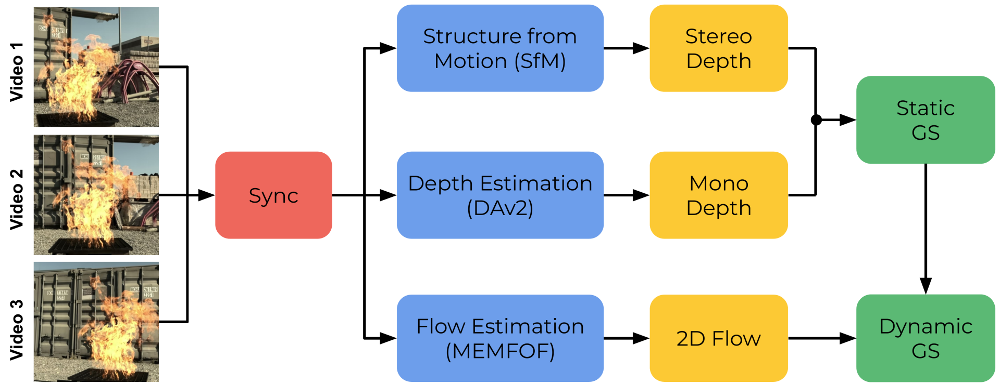
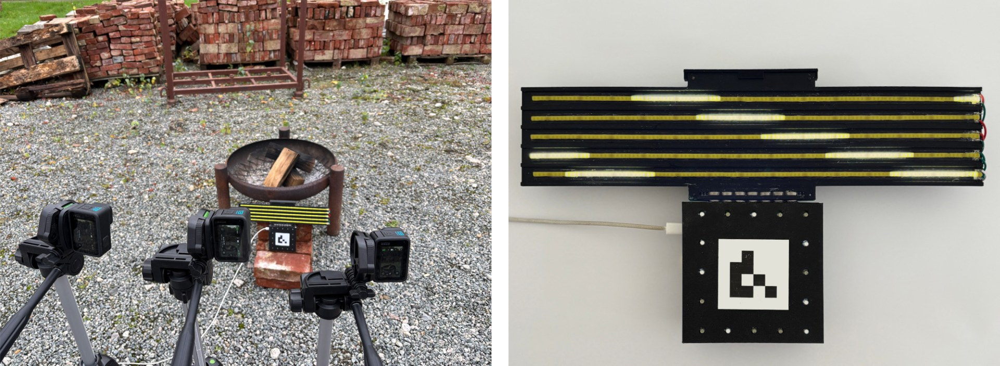

We propose a method to reconstruct dynamic fire in 3D from a limited set of camera views with a Gaussian-based spatiotemporal representation. Capturing and reconstructing fire and its dynamics is highly challenging due to its volatile nature, transparent quality, and multitude of high-frequency features. Despite these challenges, we aim to reconstruct fire from only three views, which consequently requires solving for under-constrained geometry. We solve this by separating the static background from the dynamic fire region by combining dense multi-view stereo images with monocular depth priors. The fire is initialized as a 3D flow field, obtained by fusing per-view dense optical flow projections. To capture the high-frequency features of fire, each 3D Gaussian encodes a lifetime and linear velocity to match the dense optical flow. To ensure sub-frame temporal alignment across cameras, we employ a custom hardware synchronization pattern – allowing us to reconstruct fire with affordable commodity hardware. Our quantitative and qualitative validations across numerous reconstruction experiments demonstrate robust performance for diverse and challenging real and simulated fire scenarios.

We captured a 17-scene real-world fire dataset. Each scene consists of 3 views, captured for 15 seconds at 400 frames per second at 720p. As these scenes were captured with regular action cameras, we synchronized them visually with microsecond accuracy using our custom LED-synchronization pattern, which leverages the rolling shutter effect of the cameras to obtain near exact exposure information for each frame.
Our real-world capture setup is shown on the left, with three GoPro Hero 13 Black facing toward our fire pit. Our custom ESP-32-based visual synchronization pattern is shown at the right. Five COB-LED strips are lit sequentially, creating the rolling shutter effect visible in the image. From this, we can derive the exact exposure interval of each frame. The coarse timing is derived from the 16 additional LEDs that continuously display an incrementing Gray code.

We compare our reconstruction against four dynamic Gaussian-splatting baselines on the same captured fire sequences. Use the toggle to switch between scenes. Our method shows faithful dynamics and appearance, while the baselines suffer from severe over-smoothing, implausible dynamics, and motion artifacts.